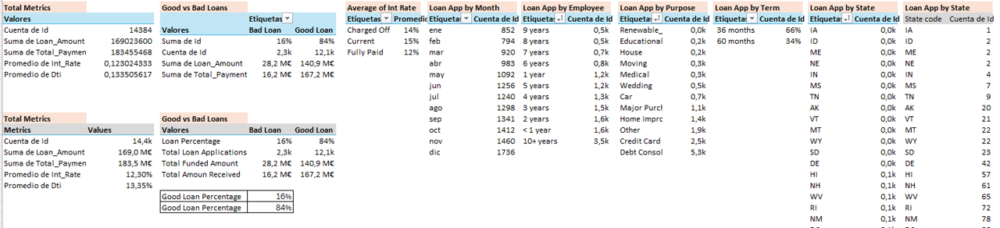

üìä Executive Bank Loan Applications Dashboard in Excel
This project focuses on preparing, cleaning, and analyzing bank financial data, followed by building an interactive dashboard in Excel. Key business insights are also highlighted.
üõ†Ô∏è Data Preparation in Excel
1. Importing Data:
The raw dataset was reviewed in Excel to understand its structure, identify irrelevant columns, and set appropriate data types—especially date formats.
2. Data Cleaning:
Steps included:
- Removing duplicates: No duplicates were found.
- Standardizing data:
- Minor standardization like trimming spaces (
=TRIM) or correcting capitalizations (=PROPER or =UPPER).
- Filters were used to check consistency in names and terms.
- Handling missing values:
- Used
XLOOKUP or manual filters to address missing data.
- Filled missing Grades using the Sub_Grade column.
- Estimated missing Interest Rates from similar rows.
- Removing irrelevant Columns/Rows: Columns not relevant to the analysis were removed to simplify the dataset.
- Adding new columns:
Created a Loan Quality Label based on the loan status:
=IF(OR([@[Loan_Status]]="Fully Paid", [@[Loan_Status]]="Current"), "Good Loan", IF([@[Loan_Status]]="Charged Off", "Bad Loan", ""))
üìä Pivot Tables for Key Metrics
Before building the dashboard, key performance indicators (KPIs) were defined and summarized using PivotTables with proper formatting (%, currency, thousands/millions).
Key Metrics include: Total Loan Amount, Funded Amount, Amount Received, Average Interest Rate, Debt-to-Income Ratio (Good vs. Bad loans), Loan Counts by Employee, State, and Purpose, and Monthly Trends.

üìà Dashboard Development
Design Principles:
- Focused on executive-level KPIs
- Clean and intuitive layout
- Interactive filters for data exploration
Visual Elements:
- KPI Cards: Total Loan, Funded Amount, Amount Received, Avg. Interest Rate
- Doughnut Charts: Good vs. Bad Loans, Loan Terms
- Bar Charts: Loans by Employee Experience, Loan Purpose
- Line Charts: Monthly Trends
- Map Charts: Geographic Loan Distribution
- Filters: Risk Grade, Loan Purpose
✅ Key Insights from the Dashboard
- The majority of loans are Good, with only 16% charged off. Though the causes for charge-offs are unknown, this is an area worth investigating.
- 28% of high-risk grade loans (E, F, G) were charged off, compared to only 13% for low-risk grades (A, B, C).
- 75% of all loans (10.6k out of 14.4k) belong to low-risk categories.
- Loan issuance increases throughout the year, peaking toward the end.
- Most loans are concentrated in California, Texas, Florida, and New York.
- The majority of loans are for debt consolidation, followed by credit card repayment.
üîç Opportunities for Further Analysis
- Trend analysis on interest rates over time
- Correlation between interest rates and risk grades
- Performance evaluation by employee experience
- Relationships between loan amount, interest rate, grade, and repayment status
- Identifying factors contributing to charged-off loans